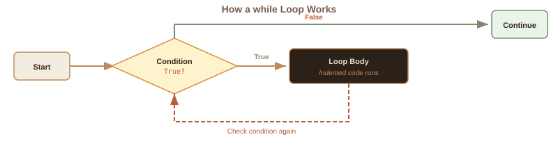
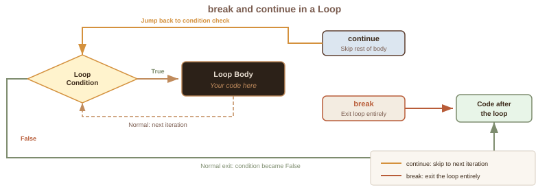
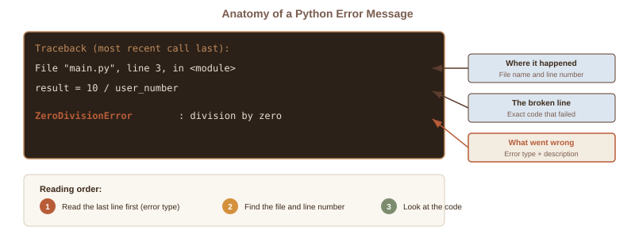

Week 9: While Loops & Advanced Debugging
CSC-125-201 · Spring 2026
CSC-125-201 · Spring 2026
| # | Section |
|---|---|
| 1 | Forum Overview |
| 2 | Week 8 Review |
| 3 | Lecture Slides |
| - | Break |
| 4 | Code Lecture |
This week: what happens when you don't know in advance how many times to repeat?
A for loop is like a to-do list with a fixed number of items. You know exactly how many times you will repeat. But some situations do not have a known count.
In all of these, you repeat until a condition changes, not for a fixed number of times. This is the problem a while loop solves.
A while loop checks a condition before each repetition. If the condition is True, the body runs. Then it checks again. When the condition becomes False, the loop stops.

Common misconception: the condition is not checked continuously while the body runs. Think of a gatekeeper who checks your ticket at the door. Once you are inside, the gatekeeper does not follow you around. They only check again when you come back to the entrance.
Both repeat code, but they answer different questions.
Tricky phrasing: students often think "stop when X" and write while X. But the condition describes when to keep going, not when to stop. "Stop when count reaches 5" becomes while count < 5.
Imagine a thermostat set to turn off the heater when the room reaches 72 degrees. But the thermometer is broken and always reads 65. The heater never turns off. That is an infinite loop.
count = 1
while count <= 5:
print(count)
count = count + 1 # This line prevents an infinite loopSometimes a loop needs to stop before the condition naturally becomes False. break is the emergency exit: it ends the loop immediately, no matter what the condition says.
Think of pulling the fire alarm in a building. Everyone exits immediately. You do not wait for the end of the workday.
Where break ends the whole loop, continue skips just the rest of the current iteration and jumps back to the condition check.

Think of running laps on a track. You trip and decide to skip the rest of this lap, but you do not leave the track. You walk back to the start line and run the next lap normally.
Think of a bouncer at a venue checking IDs. If your ID is not valid, you go back to the end of the line and try again. You only get in once you show a valid one.
This is one of the most practical uses of a while loop. You cannot know in advance how many bad attempts the user will make, so a for loop would not work here.
Every programmer makes mistakes. Python helps by giving you error messages. They look intimidating, but they follow a consistent format. Read from the bottom up.

Three categories: syntax errors (Python cannot parse the instruction), runtime errors (code made sense but failed during execution), and logic errors (no crash, but wrong answer).
Some errors are predictable. A user might type "abc" when you need a number, or divide by zero. Instead of letting the program crash, you can catch the error and handle it gracefully.
This is especially powerful combined with while loops: catch the error, tell the user, and loop back to ask again.
Most beginners debug by randomly changing things until the error goes away. That rarely works. Instead, follow a systematic process, like a doctor diagnosing a patient.
The key habit: compare what you expect to what actually happens. The gap between those two is the bug.
Available on Moodle, due Monday 11:59 PM.
This week: practice while loops, input validation, and try/except.
Reference sheet posted on Moodle to help with the assignment.
Forum Discussion (Optional) - this week's forum is optional. Use it to ask questions about the upcoming midterm.
Next week (Week 10): Midterm + Project Planning - In-Person